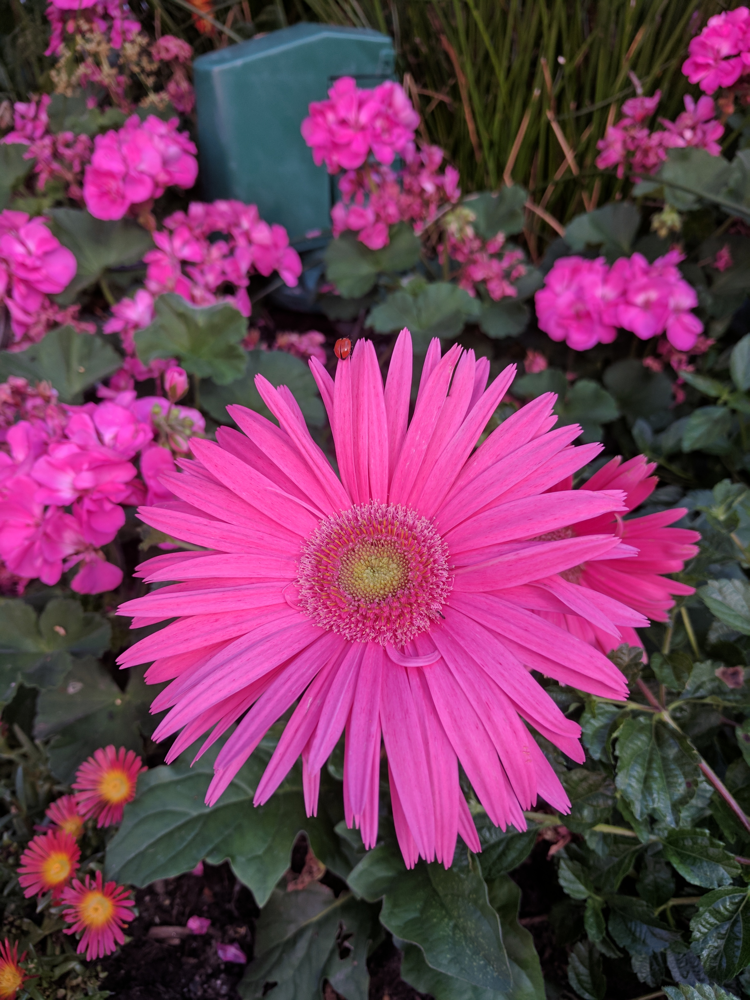

Guirlyn Olivar
I find that a healthy amount of curiosity can lead to new and exciting opportunities. It can produce the drive needed to pursue new learnings, and continue growth; producing motivation to look for potential ways to contribute to an area of interest. Looking out of the immediate circle and taking a leap of faith out of the comfort detecting when a plateau had been reached with repetitive tasks in an area. I am a student and the pace at the UC Berkley Extension Data Analysis bootcamp is accelerated. There are lots of topics to cover. And although being the expert en either topic is not the objective, forming a good overall undertanding is an absolute target.